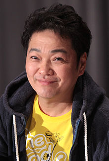

About
Synopsis
Gol D. Roger was known as the "Pirate King," the strongest and most infamous being to have sailed the Grand Line. The capture and execution of Roger by the World Government brought a change throughout the world. His last words before his death revealed the existence of the greatest treasure in the world, One Piece. It was this revelation that brought about the Grand Age of Pirates, men who dreamed of finding One Piece—which promises an unlimited amount of riches and fame—and quite possibly the pinnacle of glory and the title of the Pirate King.
Enter Monkey D. Luffy, a 17-year-old boy who defies your standard definition of a pirate. Rather than the popular persona of a wicked, hardened, toothless pirate ransacking villages for fun, Luffy’s reason for being a pirate is one of pure wonder: the thought of an exciting adventure that leads him to intriguing people and ultimately, the promised treasure. Following in the footsteps of his childhood hero, Luffy and his crew travel across the Grand Line, experiencing crazy adventures, unveiling dark mysteries and battling strong enemies, all in order to reach the most coveted of all fortunes—One Piece.
Characters & Voice Actors

Monkey D. LuffyMain
Tanaka, MayumiJapanese
Roronoa ZoroMain
Nakai, KazuyaJapanese

SanjiMain
Hirata, HiroakiJapanese

Nico RobinMain
Yamaguchi, YurikoJapanese
Staff
Cook, JustinProducer
Cook, JustinProducer
Cook, JustinProducer
Cook, JustinProducer
Soundtrack
Opening Theme
Ending Theme